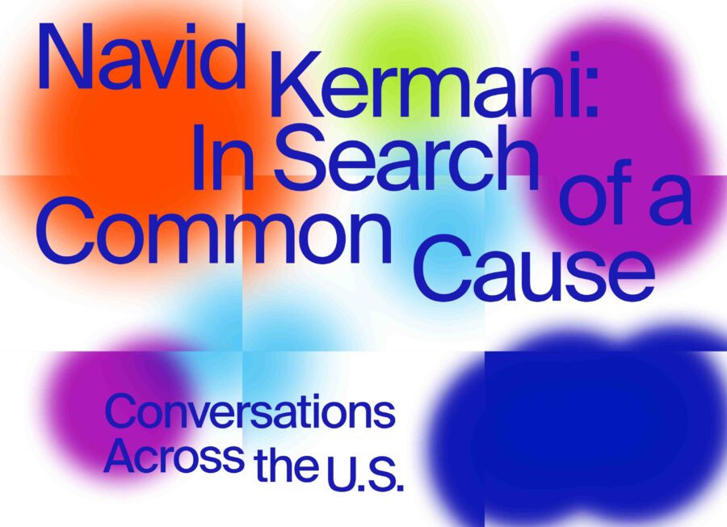

Talk + Community Dinner | German Writer Navid Kermani on the Holocaust, Colonialism, and Today’s World
A public talk by Navid Kermani, one of Germany’s most acclaimed writers
In this lecture in honor of International Holocaust Remembrance Day, Navid Kermani, in conversation with German Studies scholar Anna Parkinson, will discuss the status of memory culture in contemporary Germany and its role in a pluralistic society. Afterwards, all are invited to continue the discussion over a vegetarian community dinner by chef Adrian Ricardo Castellano featuring produce sourced from local urban farms.
This event is part of a series by the Goethe-Institut in North America in cooperation with the Thomas Mann House Los Angeles. Our partner in Chicago is the Department of German at Northwestern University.
ABOUT THE SPEAKERS
Navid Kermani is an independent German writer living in Cologne. He studied Middle Eastern Studies, Philosophy, and Theater in Cologne, Cairo, and Bonn, where he received the post-doctoral degree (“Habilitation”). For his literary and academic work, he was awarded numerous prizes, including the Hannah Arendt Prize, the Kleist Prize, the Joseph-Breitbach Preis, the Peace Prize of the German Book Trade, the Hölderlin Prize and the Thomas Mann Prize. His literary books are published by Carl Hanser Verlag (German) and Seagull Books (English), his academic and non-fictional works by C. H. Beck (German) and Polity Press (English).
Anna Parkinson is Associate Professor in the Department of German at Northwestern University, where she is also a Core Member of the Critical Theory Program, the Jewish and Israel Studies Program, and an affiliate of the Gender and Sexuality Studies Program. Her fields of research and graduate and undergraduate teaching include: twentieth and twenty-first century German-language literature and film, Holocaust and memory studies, critical theory (particularly the Frankfurt School and psychoanalysis), literatures of migration, and forensics and human rights in the Global South. Her monograph, ‘An Emotional State: The Politics of Emotion in Postwar West German Culture’ was published in 2015 by the University of Michigan Press, and she has essay publications in journals including New German Critique, European Holocaust Studies, and History and Psychoanalysis.
This event is free and open to the public but has limited capacity. Please register via Eventbrite. If you reserved a ticket but are unable to attend, please cancel your order as soon as possible. This is a courtesy to guests on the waitlist and helps us ensure a full house.